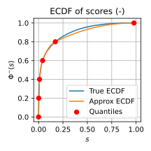
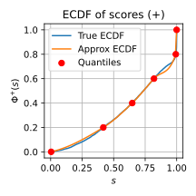
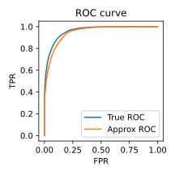
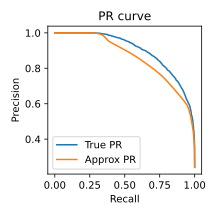
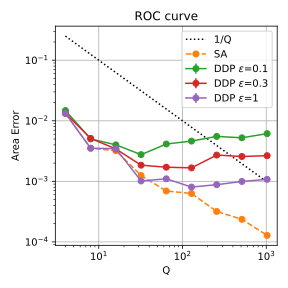
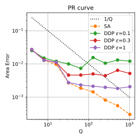

Federated Computation of ROC and PR Curves
Xuefeng Xu and Graham Cormode
University of Warwick
In Submission
TL;DR: Privacy-preserving ROC/PR curve approximation for federated learning.
Introduction
Federated Learning allows multiple clients to collaboratively train models without sharing raw data. However, evaluation is often limited to aggregate simple metrics such as accuracy or loss, which provide an incomplete picture of model performance.
We propose a method to approximate Receiver Operating Characteristic (ROC) and Precision-Recall (PR) curves in federated settings, without accessing raw client data. Our approach supports both Secure Aggregation and Differential Privacy, providing provable error guarantees and low communication cost.
Methods Overview
Our method has two steps: (1) each client sends local histograms of prediction scores for both classes to the server, which aggregates them to estimate quantiles; (2) the server uses these quantiles to approximate the empirical cumulative distribution functions (ECDF) and reconstructs ROC and PR curves.
Quantiles Estimation via Histograms
To estimate quantiles, each client builds a hierarchical histogram (Figure 1) by recursively dividing the score range into equal-width bins and counting examples in each. The server aggregates these histograms and computes global quantiles based on the combined bin counts and boundaries.

To ensure client’s privacy, we consider two mechanisms:
- Secure Aggregation: The server sees only the total, not individual bins from clients.
- Differential Privacy: Clients add independent noise to each bin before sending.
Curve Approximation via Quantiles
Let \Phi^+(s) and \Phi^-(s) be the ECDFs of prediction score distributions for positive and negative examples. We estimate Q evenly spaced quantiles (Q=6 in Figure 2), and apply monotone piecewise cubic polynomial interpolation (PCHIP) to approximate the full ECDFs.


For the ROC curve, we then compute:
\begin{equation*} T(s)=1-\Phi^+(s), \end{equation*} \tag{1}
\begin{equation*} F(s)=1-\Phi^-(s), \end{equation*} \tag{2}
where T(s) and F(s) denote the true positive rate (TPR) and false positive rate (FPR).
For the PR curve, recall is equivalent to TPR, and precision is computed by:
\begin{equation*} P(s)=\frac{T(s)n^+}{T(s)n^+ + F(s)n^-} \end{equation*} \tag{3}
Here, n^+ and n^- are the number of positive and negative examples. Figure 3 shows the resulting approximated ROC and PR curves.


Theoretical Guarantees
To quantify approximation quality, we define the Area Error (AE) as:
Definition 1 AE is the integral of the absolute difference between the true and estimated curves: \begin{equation*} \text{AE}_\text{ROC} = \int_0^1 |T(f) - \hat{T}(f)| df, \end{equation*} \tag{4}
\begin{equation*} \text{AE}_\text{PR} = \int_0^1 |P(t) - \hat{P}(t)| dt. \end{equation*} \tag{5}
Assuming Lipschitz continuity of score distributions, we bound the AE as follows:
Theorem 1 Let Q be the number of quantiles used. Then:
- Under Secure Aggregation: \text{AE}_\text{ROC}\le O(1/Q) and \text{AE}_\text{PR}\le\tilde{O}(1/Q).
- Under \varepsilon-Differential Privacy: \text{AE}\le\tilde{O}(\frac{1}{Q} + \frac{1}{n\varepsilon}), where n is the number of examples.
Empirical Evaluation
We evaluate the method using the Adult dataset and XGBoost classifier, We test both Secure Aggregation (SA) and Distributed Differential Privacy (DDP), varying Q from 4 to 1024 and \varepsilon\in\{0.1,0.3,1\}.


As Q increases, Area Error decreases. PR curves generally show slightly higher error than ROC curves. Under DP, error plateaus due to noise, and grows as \varepsilon decreases (stronger privacy).
Citation
@misc{Xu2025fedcurve,
title={Federated Computation of ROC and PR Curves},
author={Xuefeng Xu and Graham Cormode},
year={2025},
eprint={2510.04979},
archivePrefix={arXiv},
primaryClass={cs.LG},
url={https://arxiv.org/abs/2510.04979},
}